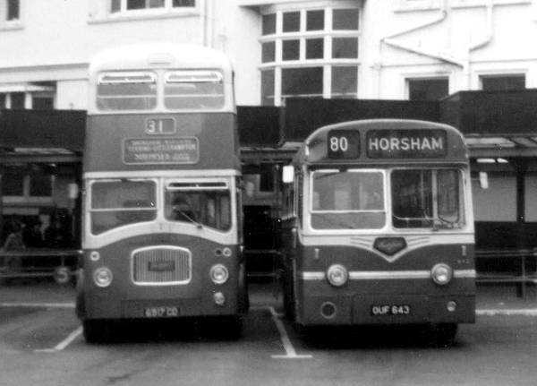
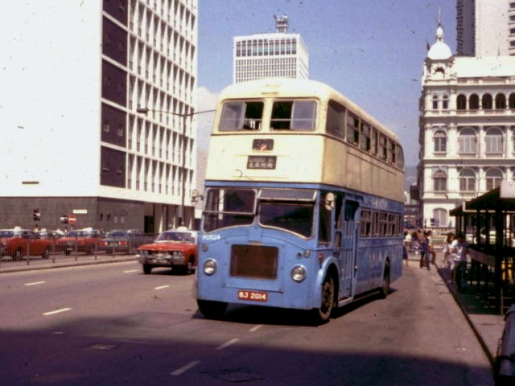
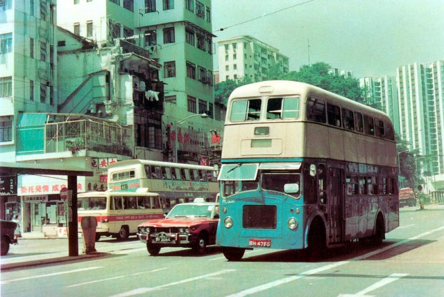
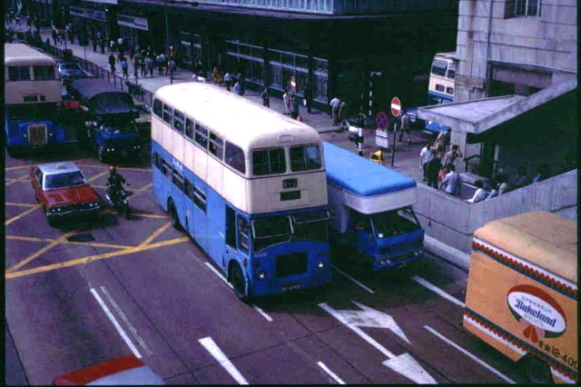
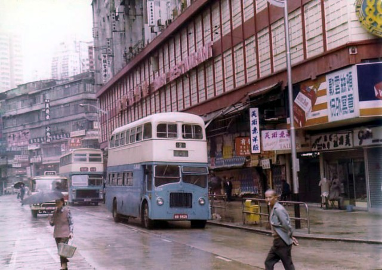
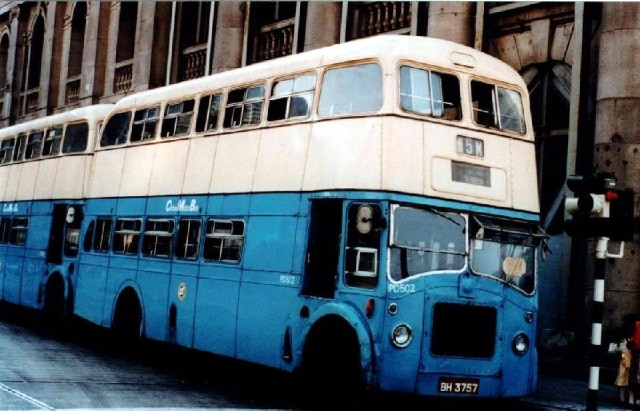

|
PD500車系----Leyland "Titan" PD3/5 |
1974年，中巴再次從英國Southdown Motor Service Ltd(SMS)購入二手巴士，這次是28部1961--1962年製造的Leyland "Titan" PD3/5。這是繼中巴從英國引進78輛Leyland "Titan" PD3/4及從印度引進一部Ashok Titan ALPD1/1後，中巴再次引進Leyland "Titan"巴士。
SMS共擁有40輛Leyland "Titan" PD3/5，全數皆於1974年退役，其中35輛轉售予二手巴士的經銷商。中巴原意是購入全數35輛來港，可惜其中7輛很快便被英國的巴士公司先下訂了，因此最後只有28輛被中巴購入。

(圖一)PD507還在Southdown Motor Service服役時的模樣，原裝的Northern Counties車身，與同門師兄Titan PD3/4大同小異。
由於這款Leyland "Titan" PD3/5是配用半自動波箱，因此較上一批"Titan" PD3/4來得先進，易於操控。中巴引進香港後，更於1976年陸續把原來使用的利蘭(Leyland)O.600引擎，改為從XA拆出的O.680引擎取代，使其馬力加大，配合行走郊區路線。
由於這批「PD」的型號為PD3/5，加上使用的機械配搭與上一批「PD」不盡相同，因此中巴特別把這批巴士編制為「PD500」車系，以與上一批「PD」作區分，編號為PD501--528。在外觀上，這批「PD」與上一批PD(PD1-78)一模一樣。至於來港後的改裝工序，中巴吸取了上一次改裝PD的經驗，這一次隨即以相同的方式把巴士作徹底的改裝及翻新，詳情可瀏覽「PD」(購自SMS)分頁。
在中巴首次引進PD時，剛好是中巴引進一人控制技術之時，當時中巴特別在改裝「PD」時，在「PD」的登車門安裝捲閘，以控制乘客上落車之秩序。但由於成效不大，加上乘客已習慣新的乘車模式，因此中巴在這次改裝工程上，決定放棄加裝捲閘。
這28輛「PD500」，於1975年2月至10月間投入服務，初期主要行走隧道路線。後期中巴把它們更換引擎後，「PD500」也一併與「佳牌」巴士行走郊區路線。直至1980年，正值大量「PD」退役，大部份「PD500」成為市區路線2號的主力，也常見於短途路線5C、5M，而其中三輛「PD500」﹕PD511、PD513、PD528，也率先於1981年與其他PD一起退下火線，等待拆卸。
1981年，餘下部份「PD500」牌照到期後，中巴並沒有再為這些車輛續牌。直至1983年的夏季，中巴把 的PD510及PD516試驗性裝設氣壓制動系統，成效令人滿意，也通過政府的驗車程序，這兩部車齡達22年的PD巴士獲得延長3年的使用期。有見及此，中巴索性把擱置已兩年的10輛「PD500」、2輛「PD」，連同印度製造的APD1，一同接受一次大規模的改裝手術，以延長服務年限。

(圖二)踏入80年代，大部份「PD500」成為2號線的主力車款。PD524正途經中環大會堂外，這車於1981年9月除牌，直至1985年6月才正式退役肢解。

(圖三)PD506，正行走2號線，途經西灣河前往筲箕灣總站。這些PD初到港時，車頭有裝設霧燈，但後期大部份都被拆除。圖中可見車頭的右下方原來霧燈的位置。

(圖四)PD506正途經中環干諾道中。這車後來於1984年改裝成為一輛半艙式巴士，並服役至1987年才退役。

(圖五)在銅鑼灣的怡和街上，正在行走2號線的「PD500」，與後方新近投入服務的「AV」，兩者車齡相差達18年。

(圖六)PD502正行走5M線。5M為1980年中巴因應地鐵金鐘站使用而開辦的地鐵站接駁路線。
圖片來源﹕
圖一、五、六﹕網主搜集圖片
圖二、四﹕外購
圖三﹕明信片